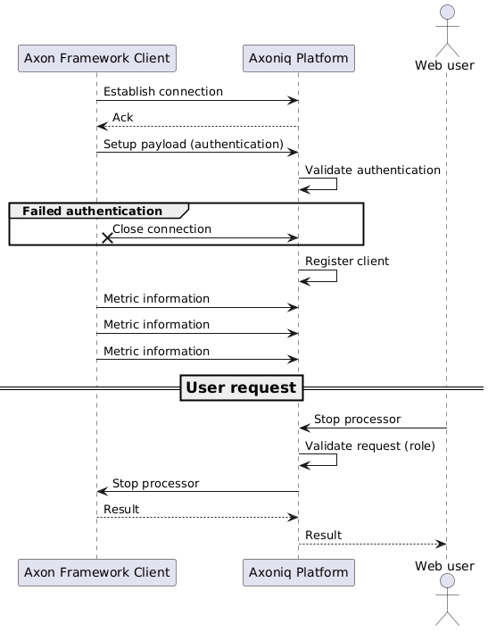
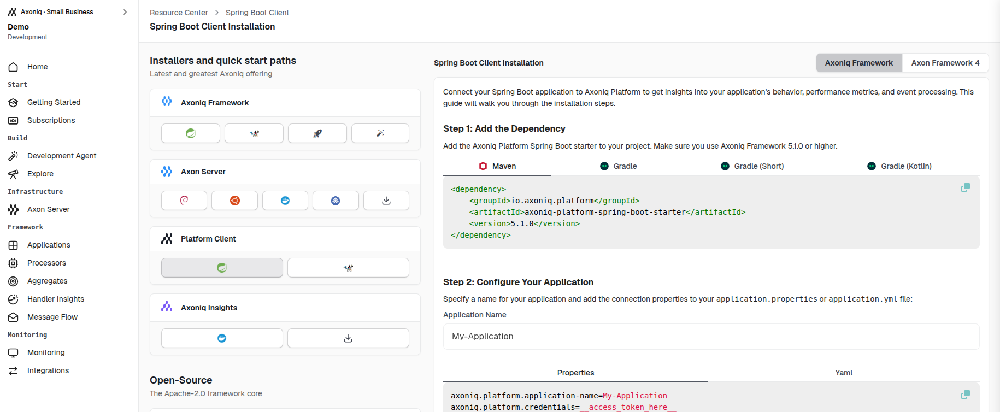

Axon Framework Client
The Axon Framework client is in charge of instrumenting the components in your Axon applications. This instrumentation allows metrics to be collected and sent to the Axoniq Platform servers. In addition, it registers specific operations that can be triggered from Axoniq Platform, such a pausing and starting event processors. The client is open-source and can be found on GitHub.
Summary
The Axon Framework connector has been designed with privacy concerns in mind. It only collects aggregated metrics and names of components, but never the message payload unless specifically enabled by the user for the dead-letter queue (DLQ).
All data is sent over a secure SSL connection using the RSocket protocol and stored for a maximum of 30 calendar days. A select set of operations are opened by the client, and can only be invoked by users with the appropriate rights assigned in Axoniq Platform.
You can find more information about the data collected on the data collection page, and more about the possible operations on the operations page.
Firewall configuration
The Axon Framework connector needs to establish a connection to the Axoniq Platform servers.
This happens over port 7000 to IP address 34.149.46.65.
If your organization has a firewall, you need to allow this connection.
Bi-directional communication
RSocket provides bidirectional communication between the client and the server. During the setup phase, a payload is sent to the server to authenticate the client. If this fails, the connection is closed before any data is accepted.
When the connection is established, the client sends metrics to the server periodically. The client can also receive commands from the server, such as stopping a processor, triggered via the Axoniq Platform user interface.

Note that in some cases, for example, when enabling automatic scaling, the server can send commands to the client without user intervention. For more information, see the automatic scaling of segments page.
Installation
The installation of the Axon Framework connector depends on your framework version and setup. Axoniq Platform will guide you through the installation process in the Resource Center, and fills in the configuration for you automatically. You can find the Resource Center in the bottom left of the user interface after logging in.

You can access this wizard in various parts of the user interface:
-
On the Dashboard page
-
Click "Start Installation now" if you do not have any applications connected
-
Click "Add more applications" if you already have one
-
-
On the Applications page, at the right-hand side of the screen
Step 1: Dependency
You will need to add a dependency to your project.
Pick the tab that matches your setup.
The Axoniq Framework (AF 5) tabs use the new io.axoniq.platform client. The AF 4 tabs use the legacy io.axoniq.console client.
-
Spring Boot
-
Non-Spring Boot
-
Spring Boot (AF 4)
-
Non-Spring Boot (AF 4)
Add the Axoniq Framework BOM, the Axoniq Framework Spring Boot starter, and the Axoniq Platform client starter.
The starter auto-configures the framework and connects to Axon Server on localhost:8124 by default.
<dependencyManagement>
<dependencies>
<dependency>
<groupId>io.axoniq.framework</groupId>
<artifactId>axoniq-framework-bom</artifactId>
<version>5.0.0</version>
<type>pom</type>
<scope>import</scope>
</dependency>
</dependencies>
</dependencyManagement>
<dependencies>
<dependency>
<groupId>io.axoniq.framework</groupId>
<artifactId>axoniq-spring-boot-starter</artifactId>
</dependency>
<dependency>
<groupId>io.axoniq.platform</groupId>
<artifactId>axoniq-platform-spring-boot-starter</artifactId>
</dependency>
</dependencies>For plain Java projects, pull in the Axon Framework event-sourcing and modelling modules, the Axon Server connector, and the Axoniq Platform client. Versions are managed by the BOM.
<dependencyManagement>
<dependencies>
<dependency>
<groupId>io.axoniq.framework</groupId>
<artifactId>axoniq-framework-bom</artifactId>
<version>5.0.0</version>
<type>pom</type>
<scope>import</scope>
</dependency>
</dependencies>
</dependencyManagement>
<dependencies>
<dependency>
<groupId>org.axonframework</groupId>
<artifactId>axon-eventsourcing</artifactId>
</dependency>
<dependency>
<groupId>org.axonframework</groupId>
<artifactId>axon-modelling</artifactId>
</dependency>
<dependency>
<groupId>io.axoniq.framework</groupId>
<artifactId>axon-server-connector</artifactId>
</dependency>
<dependency>
<groupId>io.axoniq.platform</groupId>
<artifactId>axoniq-platform-framework-client</artifactId>
</dependency>
</dependencies>For applications still on Axon Framework 4, use the legacy console client starter.
<dependency>
<groupId>io.axoniq.console</groupId>
<artifactId>console-framework-client-spring-boot-starter</artifactId>
<version>LATEST_VERSION</version>
</dependency>For Axon Framework 4 in a non-Spring Boot setup, use the plain console client.
<dependency>
<groupId>io.axoniq.console</groupId>
<artifactId>console-framework-client</artifactId>
<version>LATEST_VERSION</version>
</dependency>Step 2: Configure
After adding the dependency, configure the connector with the environment ID and access token from Axoniq Platform.
-
Spring Boot
-
Non-Spring Boot
-
Spring Boot (AF 4)
-
Non-Spring Boot (AF 4)
Set the connection properties in your application.properties (or application.yml):
spring.application.name=my-axoniq-app
axoniq.platform.credentials=ENVIRONMENT_ID:ACCESS_TOKENRegister an AxoniqPlatformConfiguration on the EventSourcingConfigurer:
import io.axoniq.platform.framework.AxoniqPlatformConfiguration;
import org.axonframework.config.EventSourcingConfigurer;
AxoniqPlatformConfiguration platformConfig = new AxoniqPlatformConfiguration(
"ENVIRONMENT_ID",
"ACCESS_TOKEN",
"my-application"
);
EventSourcingConfigurer configurer = EventSourcingConfigurer.create()
.componentRegistry(cr -> cr.registerComponent(
AxoniqPlatformConfiguration.class,
c -> platformConfig
));
configurer.buildConfiguration().start();For Axon Framework 4 applications, set the legacy console properties in your application.properties or application.yml:
axoniq.console.application-name=My Application
axoniq.console.credentials=ENVIRONMENT_ID:ACCESS_TOKEN
axoniq.console.dlq-mode=FULLFor Axon Framework 4 applications, configure the legacy console module on your Configurer:
public void configure(Configurer configurer) {
AxoniqConsoleConfigurerModule
.builder(
"ENVIRONMENT_ID",
"ACCESS_TOKEN",
"My application"
)
.dlqMode(AxoniqConsoleDlqMode.FULL)
.build()
.configureModule(configurer);
}Access tokens
As you can see in the configuration, you need to provide an access token. You can find these in your workspace/environment settings, or in the installation guide on Axoniq Platform.
You can, at any time, retract these tokens. Retracting a token will immediately disconnect all clients that use this token.